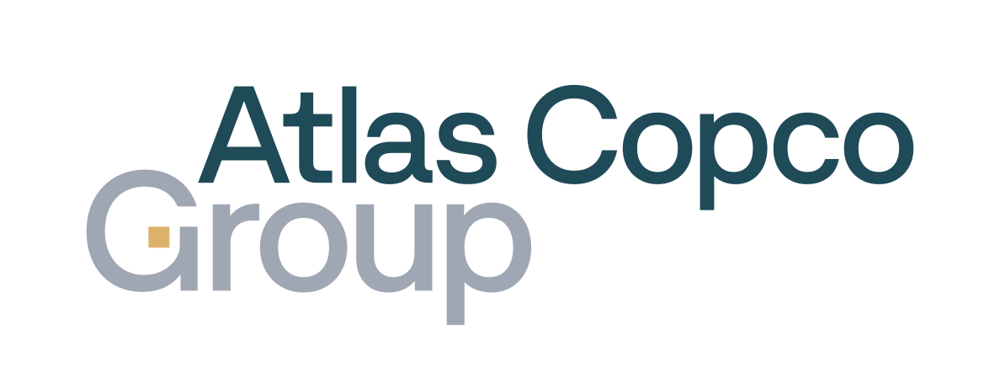
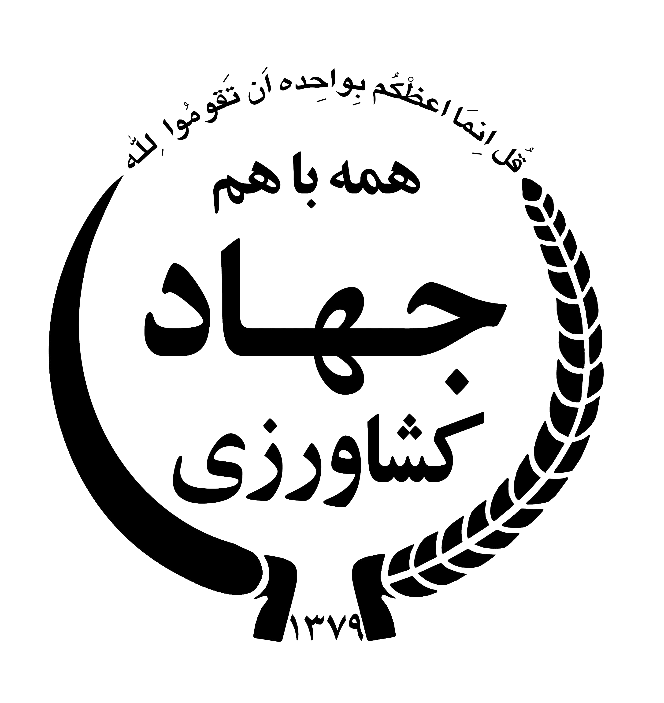
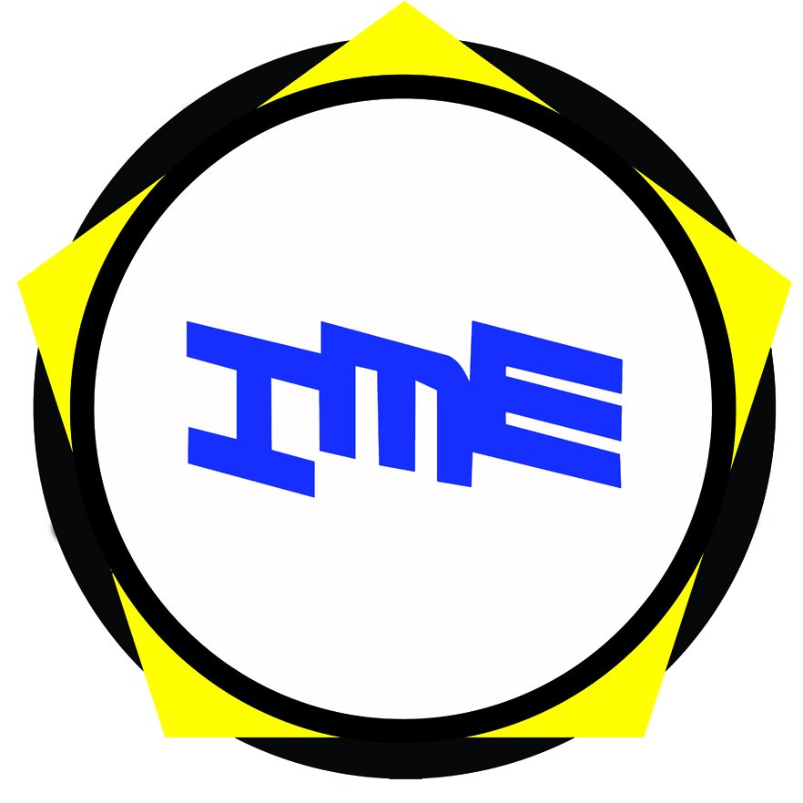

I lead complex IT initiatives from strategy to scalable products.
Data Product & Project Leader with 7+ years of experience delivering global analytics, data platforms, and enterprise transformation programs.
Selected Work & Architecture
Global Sourcing Data Product Modernization
Led the end-to-end data product strategy and delivery migrating legacy purchasing analytics to a SAP – Databricks Lakehouse architecture and governed Power BI semantic layer.
Snapp Order Center: Event-Driven Pipeline & Analytics
Led the 5-person Data Engineering workstream for the core Order Center microservice ecosystem, handling 10M+ daily events with sub-second ingestion SLAs and real-time dispatch observability.
ICADB: National Agricultural Master Data Platform
Directed architecture and phased rollout of Iran Comprehensive Agriculture Database, consolidating 31 provincial departmental silos into a unified master data management lake.




Leadership & Career History
A progressive journey spanning enterprise modernizations, scale-up data infrastructure, and public policy analytics.
Product Lead / Senior Data Specialist
Directing global purchasing and logistics data product roadmap across multiple operational divisions. Leading SAP to Databricks Lakehouse modernization and governed Power BI semantic reporting models.
Data Engineering Team Lead – Snapp Order Center
Led the 5-person Data Engineering workstream for the core Order Center microservice ecosystem, handling 10M+ daily transactions, Kafka event pipelines, and real-time operational dispatch analytics.
Technical Project Manager & Data Architect – ICADB
Directed the technical architecture and nationwide implementation of the Comprehensive Agriculture Database, consolidating 31 provincial silos into a single master data repository.
Writing & Insights
Internal Products: Part 3 — How to Measure the Success of Internal Tools
Internal Products: Part 2 — Why Internal Products Deserve Product Management
The Hidden Cost of Poor Data Documentation
Need strategic direction for your Data Lakehouse or Agile delivery team?
Available for selective advisory engagements, Data Product Strategy Sprints (2–4 weeks), and fractional leadership.
Let's discuss data strategy, architecture, or delivery leadership.
Open to high-impact leadership roles, selective advisory partnerships, and executive conversations.